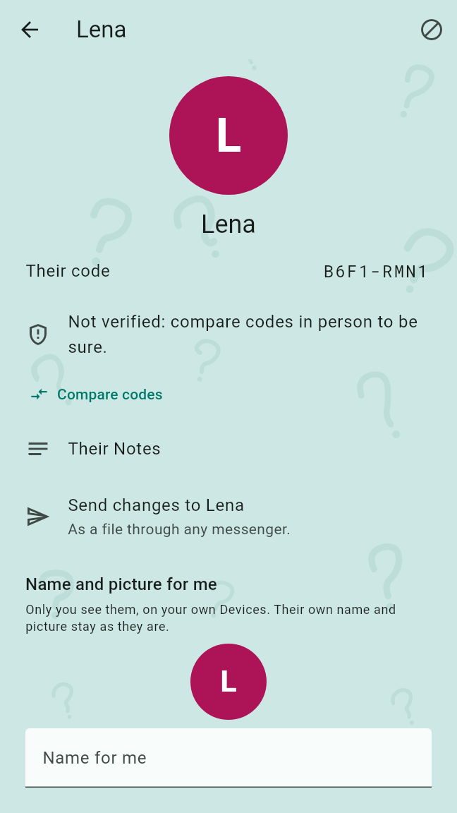
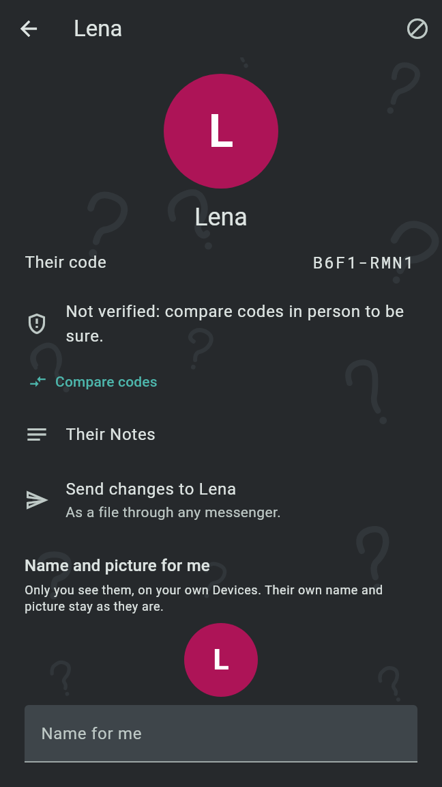
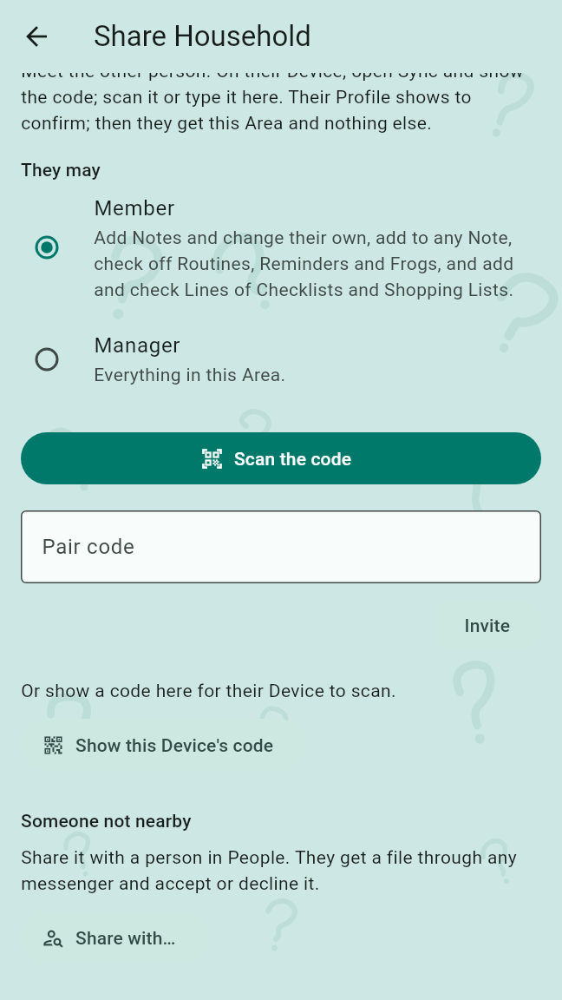
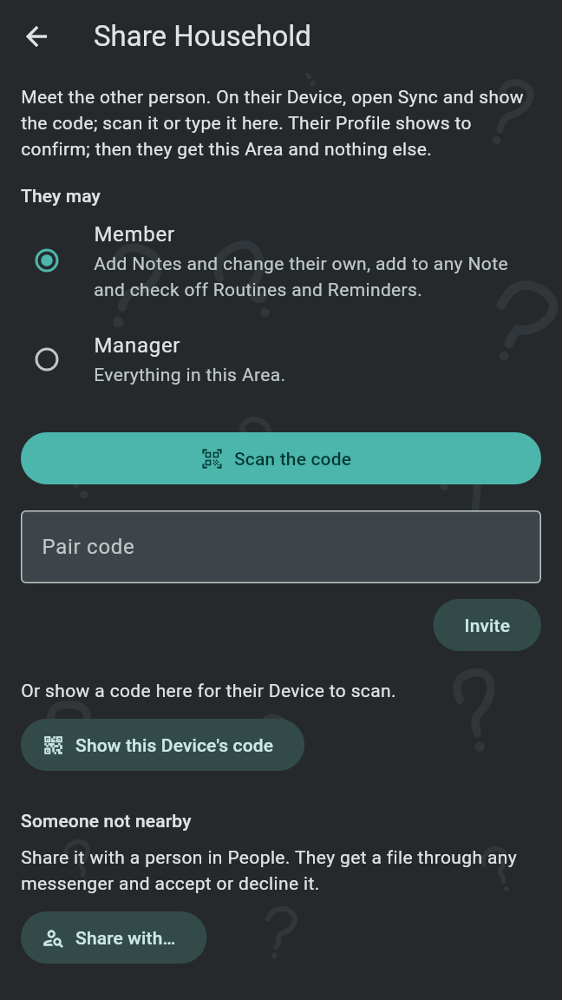
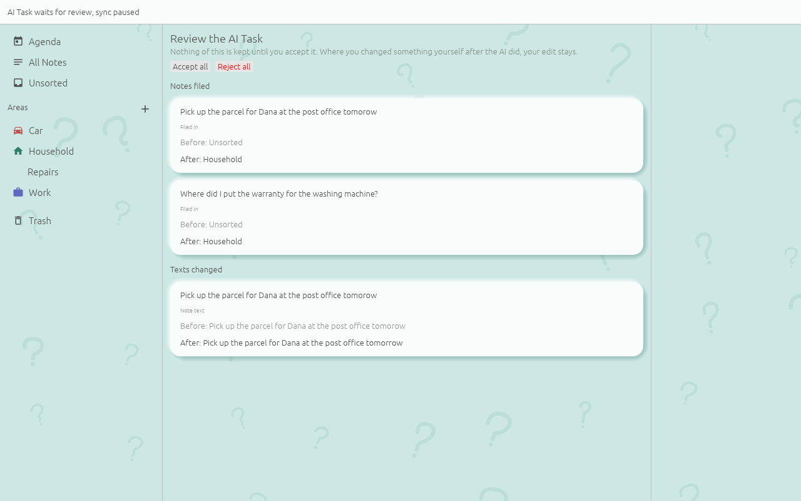
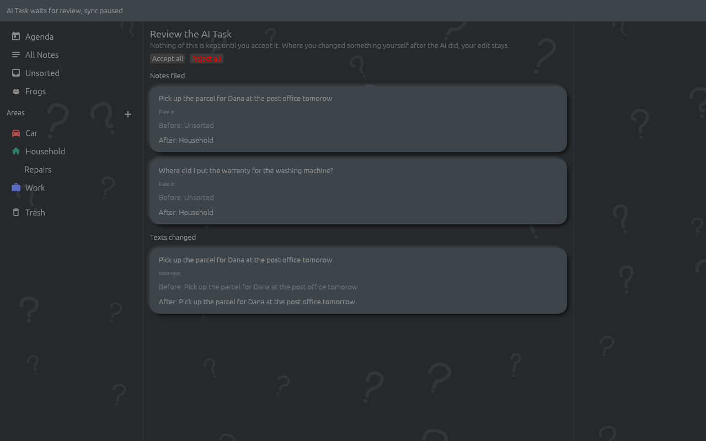

Your own Devices sync everything with each other. Other people get only what you give them: an Area you share, or a single Note you send. There is no server; changes travel over your home network, through a shared folder or as files through any messenger, encrypted.
The Profile picture in the Agenda's top corner opens the Profile page: your picture, your name and your code, then Backups and recovery, Your Devices, People and Settings of this Device. Your Profile is the same on all of your Devices. A tap on the picture changes it: Choose a picture, Take a photo, or Show initials instead while it has a picture.
A Profile card is your name and the id of your Profile. It adds you to another person's People; it never shares an Area. On the Profile page:
Ann.obfcard, through the app you pick, such as a messenger.Under People, Add a person takes someone else's card: Scan their QR with the camera, QR from a picture such as a screenshot, or a card link from an earlier version pasted into Their Profile link and Add. A card file tapped in a messenger, the Files app or a download opens in Old Brain Fix, as a Sent Item does. Their Profile then opens; a person new to you is offered Send yours back, which sends your card file, so they can add you too. A file that is no Profile card, or was changed on the way, adds nobody and says so.
Every Profile has a short code of eight characters, made from its id and its first key. A person is verified once you made sure in person that the code is theirs:
A card that came as a file or a link, or as a QR in a picture, adds the person as "Not verified: compare codes in person to be sure." Sent Items and shared Areas from them say whether they are verified.
A tap on a person in People, or on their picture anywhere it shows, opens their Profile: their picture, name and code, whether they are verified, with Compare codes while they are not, and Their Notes, every Note they wrote that you can see. Under Name and picture for me you give them a name and a picture only you see, on your own Devices, such as "Mum"; their own name and picture stay as they are. Block is on the bar (see Block a person).


A Shared Area is an Area other people sync with. Only that Area goes to them, with its Topics, Notes, Routines, Reminders and their history; everything outside it stays private. In the Areas list, ⋮ next to an Area offers Share… to its owner and its Managers, and People once it is shared. A Shared Area shows the names of its people under it.
The first to share an Area is its first Manager. Under ⋮, People lists everyone in it with their role. A Manager has Make Manager or Make Member, and Remove, for everyone else: nothing more of the Area goes to a person removed, and what they already have stays with them.
Share… opens the share page. Pick Member or Manager under "They may", then meet the other person, both Devices on the same Wi-Fi:
Nobody types a name. Once the Devices met, their Profile shows with its code: "Compare the code with the one on their Profile page. Only then is anything shared." Share gives their Device this Area and nothing else, and the Area shows as shared from then on. A phone shares with a phone as well as with a computer.
Under "Someone not nearby", Share with… lists the people in People the Area can go to, those not verified marked "Not verified". Pick one, with the role chosen above. The first time, the app asks "How do changes travel with {name}?":
The offer goes as a file through the app you pick. The question is asked only when this Device can use a shared folder; otherwise changes travel as files.
The person who gets the offer opens the file with Old Brain Fix. Their Agenda shows "1 shared Area waiting" until they decide; its preview says who shares which Area as what, and how changes travel. "Nothing of the Area is kept until you accept." Compare codes marks the sharer verified on Accept. Accept takes the Area in, and asks for the shared folder when changes travel through one and none is chosen yet; Decline keeps nothing; Decline and block keeps nothing and blocks the sharer. Until the person accepts, and also after a decline, they are listed among the Area's people, and you remove them as anyone else.


A Note's ⋮ on its card, and the bar of the Note editor, hold two ways to hand a Note on:
"Who gets it?" offers each person whose Device's keys are known here, "{name}, encrypted", and Anyone, not encrypted: whoever gets that file can read it. "It carries the text, the Sections and the Routines and Reminders; no photos, recordings or where it was captured." Send hands the file to the app you pick. Sending the same Note again sends it as an update; Send a cancellation instead lets them move it to their trash, with its alarms off.
A Sent Item opened with Old Brain Fix shows its preview: who sent it, whether they are verified ("Verified: code compared in person", "Not verified: known here, code not compared yet" or "Not verified: this Profile is new here", each with the code), whether it came encrypted, and its text, Sections, Routines and Reminders. Accept adds it to Unsorted with its alarms on, and the sender to People; Decline keeps nothing; Decline and block keeps nothing and blocks the sender.
A Checklist comes with its Lines as the sender sees them. A Shopping List comes with its Lines, each with its reappear time ("Reappear time: 1 week") and all open, as none has been checked yet on your side; a Line the sender set to Once and checked stays with them. Updates add, rename and remove the sender's Lines; the Lines you added, your checks and the reappear times you set stay.
An update shows "What changes", such as a Routine moved from one time to another, and Apply update. Your own Sections, Routines and Reminders, Done marks, Importance and where you filed the Note stay as they are; a text you changed yourself is replaced. A cancellation offers Move to the trash, from where the Note can be restored. Only the sender can update or cancel what they sent.
A Sent Item from someone not among your People is held: the Agenda shows "1 Sent Item waiting", and its preview says only who it is from, "An unknown person: not among your People." "What they sent stays hidden until you tap Show." Accept, Decline and Decline and block work before Show too; Show is not remembered, so the item is hidden again the next time it opens.
On the Profile page, under Your Devices, Sync with another Device opens Sync. Devices of your own pair once by code; both then hold the same Notes, Areas and Routines. Settings stay on each Device and are never synced.
Both Devices are on the same Wi-Fi. Either one shows its code and the other scans or types it, in both directions, also from phone to phone:
The Device showing the code asks "Let {name} join?": "It gets everything on this Device and syncs with it from then on. Say yes only to a Device of your own." Let it join pairs them. A code that points outside your home network is refused. When both Devices had a Profile of their own, the app asks "Which one is you?"; the one you pick is kept on all of your Devices.
"Paired Devices on the same Wi-Fi sync on their own, while the app is open and every quarter of an hour in the background." Under Paired Devices, Sync lists each one with when it last synced, Forget; a Device that can be found on the network also has the switch Sync automatically, on by default. Another person's Device, met by sharing an Area in person, shows as "Another person's Device" and gets only the Areas shared with them.
"Syncs through a folder that Syncthing, Nextcloud or a USB stick carries between your Devices, wherever they are. Everything in it is encrypted: only Devices paired with this one can read it." Choose folder picks it and syncs through it at once; Sync then shows when it last synced and what came in, and Forget stops using it. A Device pairs once in person before it can read the folder: files from a Device this one is not paired with are counted and left unread. A Shared Area uses whatever shared folder both people reach; the other person reads that Area's files there and nothing else.
A bundle "sends what is new as one file through any messenger or mail, and the other Device imports it." Under Sync bundle, For picks a paired Device or Everything; Send bundle hands the file to the app you pick, and Import bundle takes one in. A bundle opened with Old Brain Fix from a messenger or a file manager is imported as well. It too is encrypted, and only a paired Device can read it.
With a person whose changes travel as files, nothing moves until you send them. Their Profile page shows Send changes to {name}, "As a file through any messenger": a bundle with what is new in the Areas shared with them, for all of their Devices.
The Changes Nudge reminds you: a notification such as "Changes for Bob and Carol", 30 minutes after the first change no bundle carried to them yet, one for everyone waiting. It comes again as the Nudge does, at the Nudge's repeat time, and waits during Quiet Hours. A tap on it offers each person's bundle in turn, one app picker after another; a picker left without an app keeps the Changes Nudge for that person.
Some changes wait for your decision before anything of them is kept: an Area offered to you from afar, a Sent Item from someone not among your People, and, on the desktop, an AI Task. They wait, also across a restart, until you accept or decline them; declining leaves nothing behind.
When two Devices changed the same thing before they synced, the newer version shows, and Sync lists a Conflict: a Note's text, text added to a Note, a Line of a Checklist or Shopping List, the name of an Area, a Topic or a Named Place, a Named Place's radius, or a Routine's schedule. Each version says on which Device and when it was written; a tap on Keep this version keeps that one. A sync that brought Conflicts says so at the top, and a tap there leads to them.
On the desktop, an AI model of your choice can work on your Notes for one task, such as fixing typos. Settings, Open the AI port opens a port reachable only from this computer with its token, and shows its address with ways to copy what a client needs: Copy client config for MCP clients that connect over HTTP, Copy the command for Claude Code and Copy the config for Claude Desktop. While the port is open and until the review, sync is paused, and a banner says so.
Done, review closes the port and opens "Review the AI Task": every change, grouped by kind, such as Notes filed and Texts changed, each with its before and after. "Nothing of this is kept until you accept it." Accept all keeps every change; Reject all asks once and keeps none. Where you changed something yourself after the AI did, your edit stays, marked "Your edit stays". One AI Task runs at a time.

